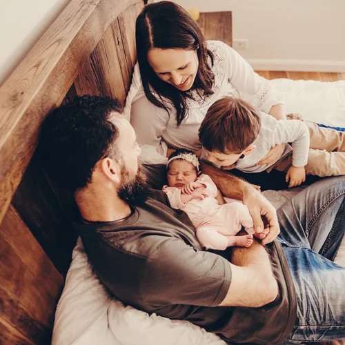
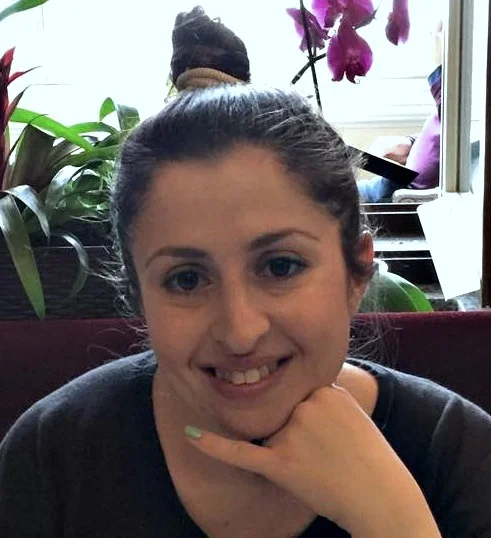
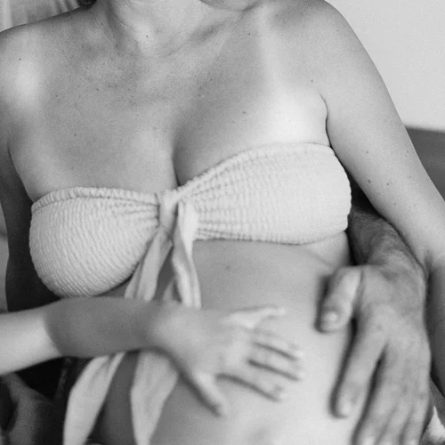
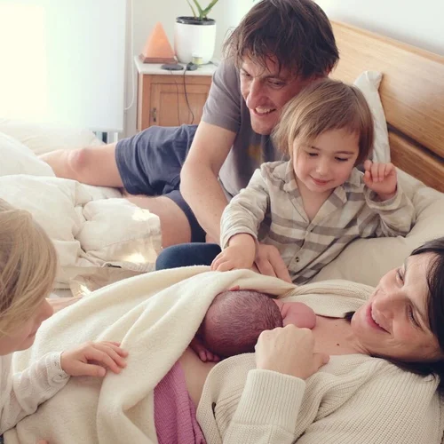

★★★★★
"She was calm and professional yet kind and warm. She really helped support my partner so he could support me. I felt truly cared for in a very special way."
Dr Camilla White
GP & mother of three
Testimonials
"She was calm and professional yet kind and warm. She really helped support my partner so he could support me. I felt truly cared for in a very special way."
Dr Camilla White
GP & mother of three

"Nat has the most divine way of making you feel safe, informed, connected and fully in control. She is a wealth of knowledge, experience and intuition."
Amy Sinclair
Mother of two

"I felt very safe having her by my side. I was visualising an intimate, drug-free water birth and my wish became a reality with Nathalie's help. This was the best investment."
Cisco Tschurtschenthaler
Mother of two

"I felt supported in every essence of pregnancy and mothering. You just completely 'got' everything I needed to chat to you about and made me feel calm and confident."
Renée D'Arcy
Mother of three

"Nat has the ability to create the most respectful, beautiful, gentle and sacred space. At my most vulnerable I felt safe and connected."
Emma Bellamy
Mother of three

"Nathalie has supported me for the births of two of my children. Her calm and grounded energy coupled with her extensive knowledge gave me such comfort."
Priscylla Elliott
Mother of four

"Nathalie was a constant support with the most beautiful nature. We adored her manner, communication and we found all of her teachings highly informative and clear."
Lucy Folk

"She helped me understand that there really is no need for fear around birthing, to trust my intuition and the importance of the Birthing Field being saturated with Love."
Sophie Willing
Mother of two

"Nathalie provided wonderful support throughout my pregnancy and birth. Her unwavering calmness was so beneficial in such a pivotal event in life."
Bethany Cecins
"Nathalie was a great source of power during my second pregnancy. It was so comforting to know I could message her about anything pregnancy and birth related."
Shanay Hall

"You encouraged me in every moment where I was beginning to feel like I couldn't do it anymore. You helped me realise that I had all the power I needed."
Kaity Fox

"You made us feel so nurtured, which was such a big part of making this birth experience so joyful. Your support was invaluable."
Karla Hammer

"I truly felt more held by the doula than anyone else in the birth process and I literally don't know what we would have done without her."
Técha Noble

"Her calming presence and gentle nature was invaluable. In the words of my husband, 'just being around her makes you feel calm and relaxed'."
Tania C
"Together we achieved a completely natural vaginal birth after cesarean! Honestly a dream come true. Thank you so much Nathalie."
Nerine M

"My labor turned out to be a long one with some complications, but it is not a bad memory, thanks in large part to Nathalie's warm support."
Jennifer PD

"Nathalie not only exceeded every expectation, she was a pivotal component of my dream birth story. My recommendation of Nathalie could not be higher."
Cassandra
"Nathalie strikes a perfect balance between being both personal and professional. Having an experienced individual in the birth process who is there for you and only you is an absolute must."
Kate B

"I believe that thanks to Nathalie I could give birth naturally and have a successful VBAC. Her assistance was invaluable."
Mai K

"I don't think I could have endured 30 hours of labor without having you there, helping me breathe through contractions, and trying different positions."
Laurie S

"You helped me feel empowered and positive, and I think this made a huge difference for me. It was really such a wonderful, positive experience overall."
Thea V

"The overwhelming calming confidence you gave my wife was what I liked best about your support. Your calm confidence and knowledge allowed her to trust her body."
George Gorrow

"I highly recommend Nathalie! Warm, kind, thoughtful, calm, witty — we feel very lucky to have her in our lives."
Jan Svarovsky
"Nathalie brought a beautiful calming energy through our journey of being parents. Having her there for our first child was super comforting."
Ryan Bienefelt

"Nat was an amazing support to my wife and I throughout the whole process. Nothing was too much trouble and she was very generous with her time, advice and support."
Ryan Allen

"She really was the most important support person during the whole process. Nathalie created a very natural, relaxed and calm atmosphere which had a profound effect on us."
Nico Georgieff

"I strongly believe Nathalie must be one of the best doulas out there. I can't imagine anything else we could have needed."
Rory K

"Nathalie was able to support both of us in a way that I knew I couldn't do on my own. Everyone should benefit and have a doula like Nathalie at their birth."
George Popov
"I actually don't know how you are supposed to do it without one — both as a mother and a father. Thank you Nathalie, you were excellent!"
Felix

"Nathalie was able to read the situation well, knowing when and how to offer the right support at the right moment. Her experience was invaluable."
Jamie Baxter

"I felt so comfortable with you that it was well worth the effort. Nathalie was exceptionally understanding and supportive."
LS